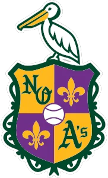

ABL · SS
Jared Mathis
- Team
- New Orleans Athletics
- Position
- SS
- Bats/Throws
- R/R
- Height/Weight
- 5'10", 180 lb
- Born
- Aug 8, 1975 in Daytona Beach, FL
- Age
- 26
- Uniform
- #1
- Salary
- $244,000
2002 batting
| Team | Lg | G | PA | AB | R | H | 2B | 3B | HR | RBI | BB | K | SB | AVG | OBP | SLG | OPS |
|---|---|---|---|---|---|---|---|---|---|---|---|---|---|---|---|---|---|
| BaRo | Low Minors | 11 | 50 | 43 | 4 | 13 | 3 | 1 | 0 | 5 | 3 | 2 | 0 | .302 | .375 | .419 | .794 |
| BiBa | High Minors | 24 | 88 | 81 | 9 | 20 | 3 | 1 | 3 | 9 | 5 | 17 | 4 | .247 | .299 | .420 | .719 |
2002 batting, advanced
| Team | Lg | PA | Pit/PA | SH | SF | HBP | IBB | GIDP | CS | OPS+ | ISO | BABIP | BB% | K% | WPA | UBR | WAR |
|---|---|---|---|---|---|---|---|---|---|---|---|---|---|---|---|---|---|
| BaRo | Low Minors | 50 | 2.78 | 2 | 0 | 2 | 0 | 0 | 1 | 102 | .116 | .317 | 6.0% | 4.0% | 0.02 | -0.6 | 0.1 |
| BiBa | High Minors | 88 | 3.73 | 1 | 0 | 1 | 0 | 1 | 2 | 81 | .173 | .279 | 5.7% | 19.3% | 0.30 | -0.7 | 0.0 |
Streaks
Longest hitting streak: 6 games (Apr 22 to Apr 29); current: 2
Longest on-base streak: 6 games (Apr 22 to Apr 29); current: 6
Batting splits
| Split | G | PA | AB | R | H | 2B | 3B | HR | RBI | BB | K | SB | AVG | OBP | SLG | OPS | ISO | BABIP | BB% | K% |
|---|---|---|---|---|---|---|---|---|---|---|---|---|---|---|---|---|---|---|---|---|
| vs LHP | 10 | 17 | 15 | 2 | 4 | 0 | 0 | 1 | 3 | 2 | 1 | - | .267 | .353 | .467 | .820 | .200 | .231 | 11.8% | 5.9% |
| vs RHP | 35 | 121 | 109 | 11 | 29 | 6 | 2 | 2 | 11 | 6 | 18 | - | .266 | .322 | .413 | .735 | .147 | .303 | 5.0% | 14.9% |
| Home | 19 | 75 | 69 | 8 | 23 | 4 | 1 | 1 | 7 | 5 | 8 | 3 | .333 | .387 | .464 | .850 | .130 | .367 | 6.7% | 10.7% |
| Road | 16 | 63 | 55 | 5 | 10 | 2 | 1 | 2 | 7 | 3 | 11 | 1 | .182 | .250 | .364 | .614 | .182 | .190 | 4.8% | 17.5% |
By month
| Month | G | PA | AB | R | H | 2B | 3B | HR | RBI | BB | K | SB | AVG | OBP | SLG | OPS | ISO | BABIP | BB% | K% |
|---|---|---|---|---|---|---|---|---|---|---|---|---|---|---|---|---|---|---|---|---|
| April | 25 | 99 | 90 | 9 | 22 | 3 | 2 | 1 | 10 | 6 | 14 | 2 | .244 | .299 | .356 | .655 | .111 | .280 | 6.1% | 14.1% |
| May | 10 | 39 | 34 | 4 | 11 | 3 | 0 | 2 | 4 | 2 | 5 | 2 | .324 | .395 | .588 | .983 | .265 | .333 | 5.1% | 12.8% |
Situational
| Situation | PA | AB | H | 2B | 3B | HR | RBI | BB | K | AVG | OBP | SLG | OPS |
|---|---|---|---|---|---|---|---|---|---|---|---|---|---|
| Bases empty | 80 | 74 | 17 | 4 | 0 | 2 | 2 | 4 | 12 | .230 | .287 | .365 | .652 |
| Runners on | 58 | 50 | 16 | 2 | 2 | 1 | 12 | 4 | 7 | .320 | .382 | .500 | .882 |
| Runners in scoring position | 40 | 34 | 13 | 2 | 2 | 1 | 12 | 2 | 5 | .382 | .432 | .647 | 1.079 |
| RISP, two outs | 17 | 15 | 5 | 0 | 0 | 1 | 4 | 1 | 3 | .333 | .412 | .533 | .945 |
| Innings 1-3 | 45 | 39 | 8 | 2 | 0 | 0 | 1 | 2 | 5 | .205 | .262 | .256 | .518 |
| Innings 4-6 | 48 | 44 | 10 | 3 | 2 | 2 | 8 | 3 | 5 | .227 | .292 | .523 | .814 |
| Innings 7-9 | 43 | 40 | 15 | 1 | 0 | 1 | 5 | 2 | 9 | .375 | .419 | .475 | .894 |
| Extra innings | 2 | 1 | 0 | 0 | 0 | 0 | 0 | 1 | 0 | .000 | .500 | .000 | .500 |
Situational splits are rebuilt from every plate appearance in the export (base/out state when the PA began). "RBI" counts runs batted in on that PA.
2002 batting game log
| Date | Opp | Score | Pos | Bat | PA | AB | R | H | 2B | 3B | HR | RBI | BB | K | SB | CS | HBP | GIDP | WPA |
|---|---|---|---|---|---|---|---|---|---|---|---|---|---|---|---|---|---|---|---|
| May 12 | vsYALL | W 6-5 | SS | 1 | 5 | 4 | 1 | 2 | 1 | 0 | 0 | 1 | 0 | 0 | 0 | 0 | 1 | 0 | 0.069 |
| May 11 | vsYALL | L 4-5 | SS | 1 | 5 | 5 | 0 | 1 | 0 | 0 | 0 | 0 | 0 | 0 | 0 | 0 | 0 | 0 | -0.056 |
| May 10 | @BHil | W 3-1 | SS | 1 | 5 | 3 | 0 | 0 | 0 | 0 | 0 | 0 | 0 | 1 | 0 | 0 | 1 | 0 | -0.035 |
| May 8 | vsQUEN | L 1-10 | 3B | 8 | 4 | 4 | 0 | 1 | 1 | 0 | 0 | 0 | 0 | 1 | 0 | 0 | 0 | 0 | 0.017 |
| May 6 | vsFMMM | L 2-4 | 2B | 9 | 4 | 4 | 1 | 2 | 0 | 0 | 1 | 1 | 0 | 0 | 0 | 0 | 0 | 0 | 0.016 |
| May 5 | vsFMMM | W 3-2 | SS | 9 | 3 | 3 | 1 | 2 | 1 | 0 | 0 | 0 | 0 | 0 | 0 | 0 | 0 | 0 | 0.032 |
| May 4 | @VERM | L 2-4 | SS | 8 | 3 | 3 | 0 | 0 | 0 | 0 | 0 | 0 | 0 | 1 | 0 | 0 | 0 | 0 | -0.057 |
| May 3 | @VERM | L 1-7 | SS | 9 | 3 | 3 | 1 | 1 | 0 | 0 | 1 | 1 | 0 | 0 | 0 | 0 | 0 | 0 | 0.115 |
| May 2 | @VERM | L 0-2 | SS | 8 | 3 | 2 | 0 | 0 | 0 | 0 | 0 | 0 | 1 | 1 | 0 | 0 | 0 | 0 | 0.018 |
| May 1 | vsSTIF | W 6-4 | SS | 8 | 4 | 3 | 0 | 2 | 0 | 0 | 0 | 1 | 1 | 1 | 2 | 0 | 0 | 0 | 0.085 |
| Apr 30 | vsSTIF | L 4-8 | SS | 9 | 2 | 2 | 0 | 0 | 0 | 0 | 0 | 0 | 0 | 0 | 0 | 0 | 0 | 0 | -0.037 |
| Apr 29 | vsSTIF | L 3-7 | SS | 9 | 4 | 4 | 1 | 1 | 0 | 0 | 0 | 0 | 0 | 0 | 1 | 1 | 0 | 0 | 0.011 |
| Apr 27 | @SoMD | W 7-5 | SS | 8 | 4 | 4 | 1 | 1 | 0 | 0 | 1 | 2 | 0 | 1 | 0 | 0 | 0 | 0 | 0.333 |
| Apr 26 | @SoMD | L 1-3 | SS | 9 | 4 | 3 | 1 | 1 | 0 | 0 | 0 | 0 | 1 | 0 | 0 | 0 | 0 | 0 | 0.012 |
| Apr 25 | @SoMD | L 10-11 | 2B | 8 | 4 | 4 | 1 | 1 | 0 | 1 | 0 | 2 | 0 | 2 | 0 | 0 | 0 | 0 | 0.170 |
| Apr 24 | vsHAVA | L 9-13 | SS | 1 | 5 | 5 | 1 | 1 | 0 | 0 | 0 | 0 | 0 | 2 | 0 | 0 | 0 | 0 | -0.058 |
| Apr 22 | vsHAVA | L 4-7 | SS | 9 | 4 | 3 | 0 | 1 | 0 | 0 | 0 | 1 | 1 | 0 | 0 | 0 | 0 | 0 | 0.067 |
| Apr 21 | @MONT | L 3-4 | SS | 8 | 4 | 4 | 0 | 0 | 0 | 0 | 0 | 0 | 0 | 2 | 0 | 0 | 0 | 0 | -0.117 |
| Apr 20 | @MONT | W 7-3 | SS | 9 | 4 | 4 | 0 | 1 | 0 | 0 | 0 | 0 | 0 | 0 | 0 | 0 | 0 | 0 | -0.075 |
| Apr 19 | @MONT | L 3-4 | SS | 8 | 4 | 4 | 0 | 1 | 1 | 0 | 0 | 0 | 0 | 1 | 0 | 0 | 0 | 0 | -0.072 |
| Apr 18 | vsNORW | W 4-1 | SS | 8 | 4 | 4 | 1 | 1 | 0 | 0 | 0 | 0 | 0 | 0 | 0 | 0 | 0 | 0 | -0.025 |
| Apr 17 | vsNORW | L 1-10 | SS | 9 | 3 | 3 | 0 | 1 | 0 | 0 | 0 | 1 | 0 | 1 | 0 | 0 | 0 | 0 | -0.007 |
| Apr 16 | vsNORW | L 2-8 | SS | 9 | 3 | 2 | 0 | 0 | 0 | 0 | 0 | 0 | 1 | 1 | 0 | 0 | 0 | 0 | 0.006 |
| Apr 14 | @ScRe | W 5-1 | 2B | 9 | 4 | 3 | 0 | 0 | 0 | 0 | 0 | 0 | 0 | 1 | 0 | 0 | 0 | 0 | -0.091 |
| Apr 13 | @ScRe | L 3-4 | SS | 7 | 3 | 2 | 0 | 0 | 0 | 0 | 0 | 0 | 0 | 0 | 1 | 0 | 1 | 0 | -0.003 |
| Apr 12 | @ScRe | L 0-12 | C | 7 | 4 | 4 | 0 | 0 | 0 | 0 | 0 | 0 | 0 | 1 | 0 | 0 | 0 | 1 | -0.037 |
| Apr 11 | vsBuBi | L 3-16 | SS | 9 | 4 | 4 | 0 | 2 | 0 | 0 | 0 | 0 | 0 | 1 | 0 | 1 | 0 | 0 | -0.006 |
| Apr 8 | @JOKE | L 1-6 | C | 6 | 3 | 3 | 0 | 1 | 0 | 0 | 0 | 0 | 0 | 0 | 0 | 0 | 0 | 0 | -0.026 |
| Apr 7 | vsBGTr | W 5-2 | C | 6 | 4 | 4 | 0 | 2 | 0 | 0 | 0 | 1 | 0 | 0 | 0 | 0 | 0 | 0 | 0.079 |
| Apr 6 | vsBGTr | W 4-0 | C | 6 | 4 | 3 | 1 | 2 | 1 | 1 | 0 | 1 | 1 | 0 | 0 | 0 | 0 | 0 | 0.183 |
| Apr 5 | @GOTH | L 2-10 | C | 6 | 4 | 4 | 0 | 0 | 0 | 0 | 0 | 0 | 0 | 0 | 0 | 0 | 0 | 0 | -0.168 |
| Apr 4 | @GOTH | L 6-7 | SS | 2 | 7 | 5 | 1 | 3 | 1 | 0 | 0 | 2 | 1 | 0 | 0 | 1 | 0 | 0 | 0.158 |
| Apr 3 | vsGOTH | W 3-1 | SS | 2 | 4 | 4 | 0 | 0 | 0 | 0 | 0 | 0 | 0 | 0 | 0 | 0 | 0 | 0 | -0.227 |
| Apr 2 | vsFred | W 3-1 | SS | 2 | 5 | 5 | 1 | 1 | 0 | 0 | 0 | 0 | 0 | 1 | 0 | 0 | 0 | 0 | 0.027 |
| Apr 1 | vsFred | W 4-0 | SS | 2 | 4 | 3 | 0 | 1 | 0 | 0 | 0 | 0 | 1 | 0 | 0 | 0 | 0 | 0 | 0.016 |
2002 fielding by position
| Team | Lg | Pos | G | GS | Inn | TC | PO | A | E | DP | FPct | ZR | Arm | Framing | SB | CS | CS% | PB |
|---|---|---|---|---|---|---|---|---|---|---|---|---|---|---|---|---|---|---|
| BiBa | High Minors | SS | 21 | 19 | 168.0 | 83 | 34 | 47 | 2 | 10 | .976 | -0.2 | - | - | - | - | - | - |
| BaRo | Low Minors | SS | 7 | 7 | 66.2 | 32 | 10 | 21 | 1 | 1 | .969 | -0.3 | - | - | - | - | - | - |
| BaRo | Low Minors | C | 4 | 4 | 34.0 | 36 | 31 | 5 | 0 | 0 | 1.000 | 0.6 | 0.0 | -0.1 | 3 | 2 | 40.0% | 0 |
| BiBa | High Minors | 2B | 3 | 3 | 24.0 | 12 | 7 | 5 | 0 | 2 | 1.000 | 0.1 | - | - | - | - | - | - |
| BiBa | High Minors | C | 1 | 1 | 8.0 | 10 | 10 | 0 | 0 | 0 | 1.000 | -0.3 | 0.0 | -0.1 | 1 | 0 | 0.0% | 1 |
| BiBa | High Minors | 3B | 1 | 1 | 9.0 | 1 | 0 | 1 | 0 | 0 | 1.000 | 0.0 | - | - | - | - | - | - |
ZR (zone rating), Arm and Framing are OOTP's runs-above-average figures. SB/CS/CS% are base stealers against him as a catcher.
Career batting
| Year | Team | Lvl | G | PA | AB | R | H | 2B | 3B | HR | RBI | BB | K | SB | AVG | OBP | SLG | OPS | WAR |
|---|---|---|---|---|---|---|---|---|---|---|---|---|---|---|---|---|---|---|---|
| 1997 | OgRa | Rookie | 54 | 212 | 197 | 30 | 55 | 14 | 0 | 0 | 29 | 6 | 20 | 7 | .279 | .312 | .350 | .663 | 0.2 |
| 1998 | PASA | A | 69 | 222 | 204 | 24 | 59 | 6 | 0 | 0 | 17 | 3 | 17 | 8 | .289 | .308 | .319 | .627 | 0.0 |
| 1998 | AUS | A | 24 | 96 | 90 | 12 | 24 | 5 | 0 | 0 | 3 | 1 | 8 | 0 | .267 | .283 | .322 | .605 | -0.0 |
| 1999 | MONT | AA | 74 | 237 | 218 | 23 | 49 | 5 | 1 | 2 | 24 | 8 | 32 | 2 | .225 | .254 | .284 | .539 | -0.6 |
| 1999 | PASA | A | 23 | 66 | 61 | 7 | 14 | 1 | 0 | 0 | 10 | 2 | 3 | 1 | .230 | .273 | .246 | .519 | -0.3 |
| 2000 | MONT | AA | 101 | 386 | 351 | 49 | 91 | 23 | 1 | 2 | 21 | 12 | 49 | 5 | .259 | .308 | .348 | .655 | 0.4 |
| 2001 | MONT | AA | 87 | 223 | 204 | 15 | 50 | 11 | 1 | 2 | 17 | 6 | 25 | 1 | .245 | .284 | .338 | .622 | 0.0 |
| 2002 | BiBa | High Minors | 24 | 88 | 81 | 9 | 20 | 3 | 1 | 3 | 9 | 5 | 17 | 4 | .247 | .299 | .420 | .719 | -0.0 |
| 2002 | BaRo | Low Minors | 11 | 50 | 43 | 4 | 13 | 3 | 1 | 0 | 5 | 3 | 2 | 0 | .302 | .375 | .419 | .794 | 0.1 |
Career pitching
| Year | Team | Lvl | G | GS | W | L | SV | IP | H | R | ER | BB | K | HR | ERA | WHIP | WAR |
|---|---|---|---|---|---|---|---|---|---|---|---|---|---|---|---|---|---|
| 1997 | OgRa | Rookie | 1 | 0 | 0 | 0 | 0 | 0.0 | 0 | 0 | 0 | 0 | 0 | 0 | - | - | 0.0 |
| 1998 | PASA | A | 3 | 1 | 0 | 1 | 0 | 2.0 | 4 | 2 | 2 | 1 | 2 | 1 | 9.00 | 2.50 | -0.1 |
| 1998 | AUS | A | 3 | 1 | 0 | 1 | 0 | 2.0 | 4 | 2 | 2 | 1 | 2 | 1 | 9.00 | 2.50 | -0.1 |
| 1999 | MONT | AA | 3 | 1 | 0 | 1 | 0 | 2.0 | 4 | 2 | 2 | 1 | 2 | 1 | 9.00 | 2.50 | -0.1 |
| 1999 | PASA | A | 3 | 1 | 0 | 1 | 0 | 2.0 | 4 | 2 | 2 | 1 | 2 | 1 | 9.00 | 2.50 | -0.1 |
| 2000 | MONT | AA | 1 | 1 | 0 | 0 | 0 | 0.0 | 1 | 0 | 0 | 0 | 1 | 0 | - | - | 0.0 |
| 2001 | MONT | AA | 1 | 0 | 0 | 0 | 0 | 1.0 | 1 | 0 | 0 | 0 | 1 | 0 | 0.00 | 1.00 | 0.0 |
Seasons before 2002 are the player's real-life record, listed under the franchise that holds that history in this universe. "Top level" totals count major-league-level seasons only.
Service time & contract status
- Service time
- 0.001 (1 days; 1 this season)
- Status
- Pre-Arb
- Arbitration
- 2005 season (projected)
- Free agency
- After the 2007 season (projected)
- Options
- 0 used, 3 remaining (of 3)
Service time is Y.DDD: major-league service years plus days toward the next year (172 days = 1 year, from the league rules). Status follows the league rules: under 3 years Pre-Arb, 3 to 5 years Arb 1/2/3, 6+ years FA-eligible. The export's arbitration_offering is 0 and no player has gone through arbitration yet (has_received_arbitration is 0 for everyone), so these statuses come from the rules, not from hearings. Projected years assume a full major-league season of service every year from 2002 on.
Contract
| Year | Salary |
|---|---|
| 2002 | $244,000 |
1-year contract with New Orleans Athletics.
Most frequent matchups pitchers he has faced
| Pitcher | AB | H | HR | AVG |
|---|---|---|---|---|
| Lee Rodney | 4 | 1 | 0 | .250 |
| Oscar Rivera | 4 | 0 | 0 | .000 |
| Mike Saipe | 3 | 2 | 0 | .667 |
| Rickey Lewis | 3 | 1 | 0 | .333 |
| Kris Wilson | 3 | 1 | 0 | .333 |
| Brandon Roberson | 3 | 1 | 0 | .333 |
| Sergio Mora | 3 | 1 | 0 | .333 |
| Darvin Withers | 3 | 1 | 0 | .333 |
| Danny Borrell | 3 | 1 | 0 | .333 |
| Isabel Giron | 3 | 1 | 0 | .333 |
| Eduardo Villacis | 3 | 1 | 0 | .333 |
| Ryan Holsten | 3 | 1 | 0 | .333 |
| Doug Johnson | 3 | 0 | 0 | .000 |
| Charlie Haeger | 3 | 0 | 0 | .000 |
| Shane Loux | 3 | 0 | 0 | .000 |